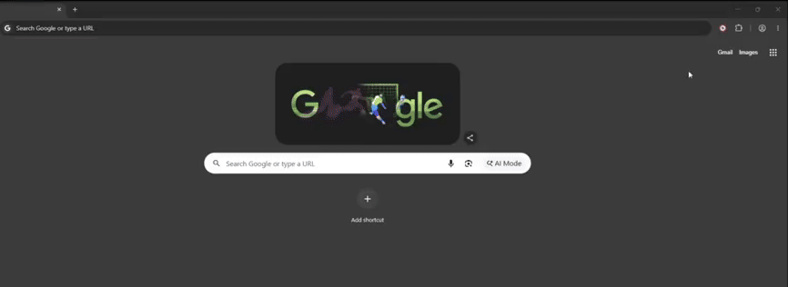
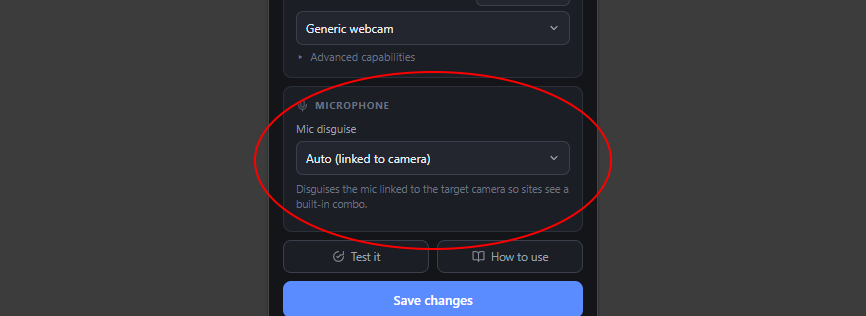
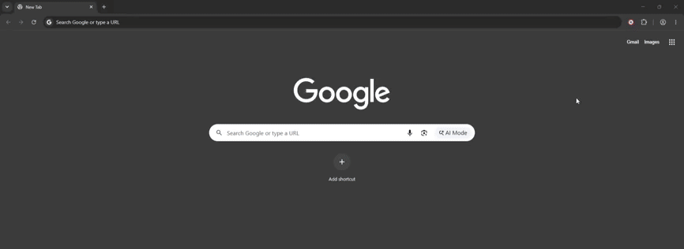

Guide
How to use VCam Bypass
Set up the extension in six simple steps, from detecting your cameras to checking what the website sees.
Steps
-

Detect your cameras
Click Detect cameras and Allow. This only reads device names.
-

Select the target webcam
Open Target webcam and pick your virtual camera. A target is required.
-

Choose a camera to emulate
Pick a real model under Emulated model, or hit New identity.
-

Microphone optional
Pick the mic to mask. Auto passes it off as the emulated camera's built-in mic, Custom gives it a name and IDs of your own, and Off leaves microphones alone.
-

Enable and save
Flip the switch on and click Save changes.
-

Verify it works
Open Test it from the popup to confirm the site sees the emulated webcam.
Hide your other devices. The eye button next to the on/off switch makes websites see only the emulated camera and microphone. Your other webcams and mics disappear from their device list, and a site that does not ask for a specific device gets the emulated one.
Reload after every change. Settings apply on page load, so reload the site whenever you change the popup.